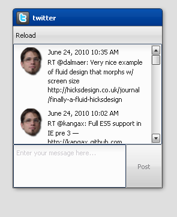

Tutorial Part 4.2: Custom Widgets¶
In this tutorial we will deal with how to create a custom widget for our Twitter application. It is necessary that you finished the tutorials part 1 through part 3 to work with this tutorial, but previous knowledge from tutorial 4.1 is not needed.
Do you remember the mockup from tutorial part 1?

You can see that one tweet consists of a photo, a text and a creation date, but at the moment the Twitter application doesn't show the creation date of a tweet. This is because we use the default ListItem to show a tweet and a ListItem can only show an image and/or label. To achieve our goal, we have to create a custom widget which we can use instead of the ListItem.
Note
The code in this tutorial should also work when you haven't completed the 4.1 tutorial because it doesn't depend on the code changes from tutorial 4.1. But if you have any problems to run the tutorial, you can also checkout the code from tutorial 4.1 on github.
The plan¶
First of all we have to create a custom widget which fulfills our requirements from the mockup. We will achieve this by combining a widget with two labels and one image. Afterwards we have to configure the controller so that it uses our custom widget for the tweets.
Create the custom widget class¶
You should know how to create a class from the previous tutorials. So please create a class for twitter.TweetView, but in our case we need to extend from qx.ui.core. Widget.
qx.Class.define("twitter.TweetView",
{
extend : qx.ui.core.Widget,
include : [qx.ui.form.MModelProperty],
construct : function() {
this.base(arguments);
}
});
The attentive reader noticed that we use the include key for the first time. include is used to include a mixin in a class. This is necessary in our case to support Data Binding. Our Twitter application uses it and therefore it is expected that the new widget implements the qx.ui.form.IModel interface. Otherwise the widget can't be used with Data Binding. But fortunately the mixin qx.ui.form.MModelProperty already implements it, so we can reuse the implementation.
Define the needed properties¶
Our widget should show a Tweet as shown in the mockup. To achieve this, we need properties to save the data for a Tweet. Add this definition to the TweetView class:
properties :
{
appearance :
{
refine : true,
init : "listitem"
},
icon :
{
check : "String",
apply : "_applyIcon",
nullable : true
},
time :
{
check : "Date",
apply : "_applyTime",
nullable : true
},
post :
{
check : "String",
apply : "_applyPost",
nullable : true
}
},
The properties icon, time and post contain the data from a tweet. In this definition you'll also find a property appearance. This property is needed for the theming, it tells the appearance system that the TweetView should be styled like the ListItem. We could also use a new appearance id, but than we'd have to define an appearance for it and that's not part of this tutorial.
How to define properties was explained in tutorial part 3, so we don't repeat it. But we use some unfamiliar keys for definition and I will explain them:
- check: check ensures that the incoming value is of this type. But be careful, the check is only done in the source version.
- apply: here you can define which method should be called when the value changes.
- refine: this is needed when an already defined property should be overridden.
- init: defines the initialized value of a property.
Using Child Control¶
qooxdoo has a special system to realize combined widgets like in our case. This system is called child controls and you can find a detailed documentation in our manual.
Okay, back to our problem. To achieve the requirements we need an Image for the photo, a Label for the post and another Label for the creation time. So three widgets, also called sub widgets, are needed for our custom widget. And last but not least the familiar Grid layout for layouting, but that's not created in the child control implementation. We just need to keep it in mind when adding the child control with _add.
members :
{
// overridden
_createChildControlImpl : function(id)
{
var control;
switch(id)
{
case "icon":
control = new qx.ui.basic.Image(this.getIcon());
control.setAnonymous(true);
this._add(control, {row: 0, column: 0, rowSpan: 2});
break;
case "time":
control = new qx.ui.basic.Label(this.getTime());
control.setAnonymous(true);
this._add(control, {row: 0, column: 1});
break;
case "post":
control = new qx.ui.basic.Label(this.getPost());
control.setAnonymous(true);
control.setRich(true);
this._add(control, {row: 1, column: 1});
break;
}
return control || this.base(arguments, id);
}
},
The child control system has a special method to create sub widgets. The method is called _createChildControlImpl and we override it to create our sub widgets. This method is called from the child control system when it notices that a sub widget is needed but not already created.
In our case:
- icon: for the photo
- time: for the creation time
- post: for the text from the tweet
Dependent on the passed id we create the correct sub widget, configure it and add it to the Grid layout at the right position. If an unknown id is passed, we delegate it to the superclass.
Finishing the constructor¶
Now i'ts time to finish the constructor.
// create a date format like "June 18, 2010 9:31 AM"
this._dateFormat = new qx.util.format.DateFormat(
qx.locale.Date.getDateFormat("long") + " " +
qx.locale.Date.getTimeFormat("short")
);
The property for the date saves only a date object and our requirement from the mockup describes a spacial format and a simple toString usage is not enough. Therefore we need a special transformation which we can achieve by using DateFormat.
// initialize the layout and allow wrap for "post"
var layout = new qx.ui.layout.Grid(4, 2);
layout.setColumnFlex(1, 1);
this._setLayout(layout);
Now we create a layout for our custom widget. This should be known from tutorial part 2.
// create the widgets
this._createChildControl("icon");
this._createChildControl("time");
this._createChildControl("post");
Time for our child control implementation. With these lines we trigger the subwidget creation which we implemented before.
Adding the apply methods¶
We have already defined the properties, but we haven't implemented the needed apply methods for them. So, time to add the missing apply method for the properties to the members section.
// property apply
_applyIcon : function(value, old) {
var icon = this.getChildControl("icon");
icon.setSource(value);
},
_applyPost : function(value, old) {
var post = this.getChildControl("post");
post.setValue(value);
},
// property apply
_applyTime : function(value, old) {
var time = this.getChildControl("time");
time.setValue(this._dateFormat.format(value));
}
The apply methods for icon and post are trivial, we have to ensure that we delegate the value change to the correct widget. To get the correct widget instance we can use the getChildControl method and afterwards we can set the value on the widget.
The date, however, needs some extra love. We have to use the DateFormat instance to format the date before we set the value.
Finishing the custom widget¶
At the end we have to add the attribute _dateFormat to the members section and a destructor to clean up the created DateFormat instance.
Just add this line at the beginning of the members section:
_dateFormat : null,
And the destructor after the members section:
destruct : function() {
this._dateFormat.dispose();
this._dateFormat = null;
}
Great, now we have finished the custom widget.
Configure the List Controller¶
At the moment the controller doesn't know that it should use our TweetView class. Therefore we have to change the old controller configuration. Search for these lines of code in the Application.js file:
// create the controller
var controller = new qx.data.controller.List(null, main.getList());
controller.setLabelPath("text");
controller.setIconPath("user.profile_image_url");
controller.setDelegate({
configureItem : function(item) {
item.getChildControl("icon").setWidth(48);
item.getChildControl("icon").setHeight(48);
item.getChildControl("icon").setScale(true);
item.setRich(true);
}
});
First of all, remove these two lines:
controller.setLabelPath("text");
controller.setIconPath("user.profile_image_url");
Now to the delegate, just replace the current delegate with this one:
controller.setDelegate({
createItem : function() {
return new twitter.TweetView();
},
bindItem : function(controller, item, id) {
controller.bindProperty("text", "post", null, item, id);
controller.bindProperty("user.profile_image_url", "icon", null, item, id);
controller.bindProperty("created_at", "time", {
converter: function(data) {
if (qx.core.Environment.get("browser.name") == "ie") {
data = Date.parse(data.replace(/( \+)/, " UTC$1"));
}
return new Date(data);
}
}, item, id);
},
configureItem : function(item) {
item.getChildControl("icon").setWidth(48);
item.getChildControl("icon").setHeight(48);
item.getChildControl("icon").setScale(true);
item.setMinHeight(52);
}
});
The concept of a delegate should be known from tutorial part 3, I will only explain the modifications.
You can see that we added a createItem method: With this method we can configure the controller to use our TweetView for item creation. The method bindItem is used to configure the controller to keep the properties of the model and the widget synchronized. In our case it is important to keep the photo, post and creation date synchronous.
controller.bindProperty("text", "post", null, item, id);
Let us have a look at the above example. The bindProperty method is responsible for the binding between model and widget. The first parameter is the path from the model, the second is the name of the property in the widget, the third parameter is an options map to do e. g. a conversion, the fourth parameter is the widget and the last is the index.
In our case the photo and the post need no conversion because the source data and target data are of the same type. But the creation time needs a conversion because the model contains a String with the UTC time while the widget expects a date object. So we have to convert the data:
converter: function(data) {
if (qx.core.Environment.get("engine.name")) {
data = Date.parse(data.replace(/( \+)/, " UTC$1"));
}
return new Date(data);
}
The converter method creates a date object from the given String. Don't be confused by the if statement. The Twitter model has a format which is not standard UTC format in JavaScript and Internet Explorer has problems parsing the String, therefore a short conversion is needed before the date object can be created.
The configureItem method should be known from tutorial part 3, there are only some improvements to keep the same behavior as before.
Great, now we've got it! Run generate.py to create the application.

Again, if you want to take a look at the code, fork the project on github.